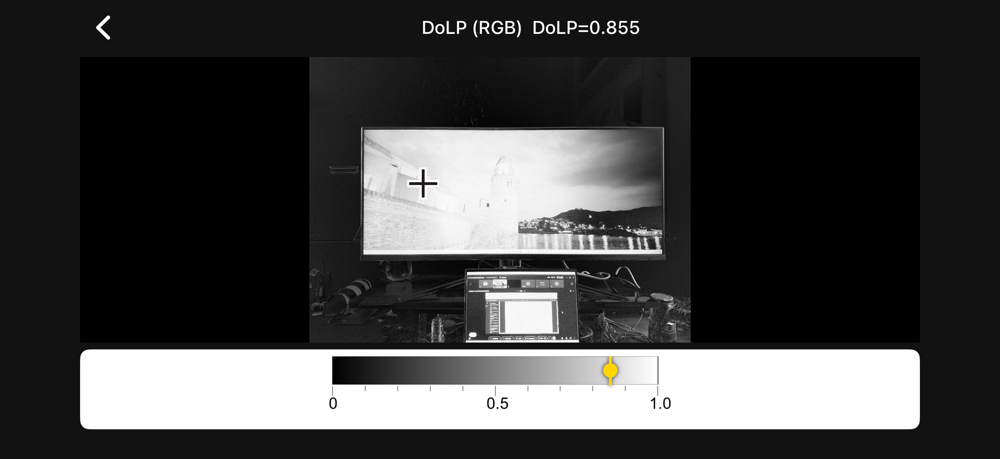

Chapter contents
User manual
Read the results
Results and data
9. Read the result
| View | How to read it |
|---|---|
| AoLP+DoLP | Hue shows the polarization angle. Brightness shows the degree of linear polarization. |
| DoLP | Degree of linear polarization. Black is 0 and white is 1. |
| AoLP | Angle of linear polarization. Match the hue to the legend. The app reports angles from 0° to less than 180°, measured from the Photo 1 orientation toward Photo 2. Black marks an undefined angle. |
Select RGB for the combined result or R, G, or B for one colour channel. The combined result averages the three channels' linear Stokes values before calculating DoLP and AoLP.
Every image view supports touch zoom and tapping, including AoLP+DoLP, DoLP, AoLP and the RGB, R, G and B channels. Pinch to zoom, drag to move around, and tap 1× when visible to reset the view. Tap the result image to open it full screen, then tap a point to read its values and see its position on the legend. Angles that differ by 180° describe the same polarization direction. Treat the angle cautiously where DoLP is very low.
Open Tap for details to see the alignment status and any exposure warnings. If you used partial alignment, magenta areas have no usable measurement.
Example 1. Read the result screen

The main image is AoLP+DoLP (RGB). Colour shows polarization angle. Brightness shows degree of linear polarization. These colours are not the original colours of the objects (Fig. 20).
Use the lower-left buttons to choose RGB, R, G or B. Use the lower-right buttons to choose AoLP+DoLP, DoLP or AoLP. Export is at the top. Tap the result image to open the point-reading view shown in Fig. 21.
The upper-right message reports overexposed and low-signal areas. Tap for details before interpreting values. A bright or colourful result alone does not show that every pixel is reliable.
Example 2. Read angle and degree at a point

Tap a point to move the cross. Read its values at the top. Angles 180° apart describe the same polarization direction, so 173.9° and −6.1° are equivalent (Fig. 21).
The yellow marker on the wheel shows the selected point. Its direction indicates AoLP. Its distance from the centre indicates DoLP. The outer edge is 1 and the centre is 0. A value of 0.969 indicates strongly linearly polarized light at this point. It does not describe every point in the image.
Example 3. Read the DoLP view


Black means DoLP = 0. White means DoLP = 1. The grayscale shows the degree of linear polarization, not the ordinary brightness of the scene. Tap a point and read its DoLP at the top; the yellow marker locates it on the grayscale bar (Fig. 22).